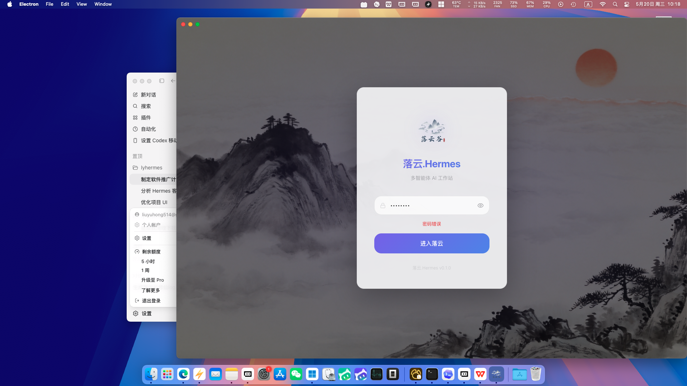

员工管理
每个 profile 都是一个岗位明确的 AI 员工。
创建员工、设置角色、写入人格、启用工具、安装技能、配置模型，并独立管理飞书/微信/钉钉凭据。
Hermes Agent 的中文桌面工作台
落云.Hermes 基于 Nous Research Hermes Agent 的记忆、技能、自我改进和工具调用能力， 为中文用户提供桌面安装、员工编排、远程节点、自动交付和办公协作入口。

一个控制面
官方 Hermes Agent 像一个强大的自我进化引擎。落云.Hermes 在它之上提供图形化控制台， 让用户真正看见员工、任务、渠道、模型、用量和远程连接状态。
员工管理
创建员工、设置角色、写入人格、启用工具、安装技能、配置模型，并独立管理飞书/微信/钉钉凭据。
远程节点
client_only 模式通过 API Token 连接远程节点，适合把 Agent 放在 VPS、工作站或办公室主机。
Web 嵌入
为员工生成带 Token 的 Web 入口，用于客服、内部问答、知识库助手和轻量客户交互。
定时交付
为什么是落云.Hermes
你的项目优势不在“又做了一个聊天 UI”，而在于把 Agent 的长期运行能力变成桌面用户可理解、可配置、可观察、可备份的产品体验。
把 Python、Git、Hermes Agent 仓库、虚拟环境、依赖安装和引擎版本检测收进引导流程，降低非命令行用户的进入门槛。
员工不只是会话列表，而是拥有名字、头像、角色、人格、工具、技能、模型和 Web 访问权限的独立工作单元。
飞书、微信、钉钉配置归属到员工 profile，日程结果可以外发到对应协作渠道，更贴近国内团队的真实工作流。
集中查看所有员工的 cron 任务、启停状态、下一次运行、上次结果和投递错误，把自动化任务从黑盒变成运营面板。
Token 统计按模型、员工和日期聚合，配合备份/导入能力，让长期运行的 AI 系统更容易复盘和迁移。
产品体验
官网需要让用户马上理解：落云.Hermes 的对象不是一段对话，而是持续工作的 AI 员工，以及围绕员工产生的模型、技能、任务、渠道和数据。
生态定位
自我改进的开源 Agent 引擎，重点是记忆、技能、工具、Gateway、多模型与终端/云后端。
解决“在浏览器里聊天”和部分仪表盘问题，适合远程访问、会话延续和轻量控制。
面向中文桌面用户的 AI 员工管理平台，把安装、员工、日程、远程、渠道和数据治理放在同一个工作台。
官方 Hermes Agent 信息参考 Nous Research 官方仓库与官方文档；落云.Hermes 能力来自当前项目源码。
落地场景
让研究、资料整理、代码辅助和复盘沉淀到长期记忆与技能体系里。
让 AI 员工按时间汇总数据、跟进项目、检查异常并自动推送到办公平台。
通过 Web 嵌入入口开放指定员工，保留 Token 访问控制和独立员工上下文。
把 Agent 放在服务器长期运行，桌面端只负责连接、配置、观察和调度。
FAQ
落云.Hermes 是基于 Hermes Agent 生态构建的桌面工作台，重点是图形化安装、员工管理、远程控制、渠道集成和数据治理。
不是。项目源码支持本机模式和 client_only 远程客户端模式，可通过 API Token 连接远程 Hermes 节点。
Hermes profile 本身适合承载不同角色。落云.Hermes 将 profile 产品化为员工，让角色、人格、技能、模型、渠道和任务都能分开管理。
个人可以把它作为长期助理工作台；团队则可以用多员工、日程和办公渠道集成来承载日报、巡检、客服、研究等持续工作。